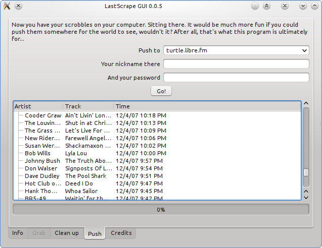

LastScrape GUI (beta)
This page is temporary. Don't link to it, please.
This is version 0.0.4 of the lastscrape GUI.
Quick Guide
Windows
- Download the package (10 MB).
- Extract it somewhere.
- Run lastscrape.exe and follow the instructions.
- Tell me how it went! Please don't forget this step for the beta.
If the program window doesn't show up (you get a message about missing libraries - please mail me the exact wording of the message), run the vcredist_x86.exe program included in the package and try again.
If you don't trust pre-built binaries from some random guy on the internet, follow the “Other systems” guide below.
Other systems
- Install PyQt4, along with its dependencies, Python and Qt4.
- Ubuntu/Debian
- sudo apt-get install python-pyqt4
- Windows
- Download and install Python and PyQt4.
- Other systems
- Use your package manager, or build from source. Tell me how you did it afterwards, so I can update this page.
- Download the archive.
- Extract it somewhere.
- Run gui.py and follow the instructions.
- Tell me how it went! Please don't forget this step for the beta.
Screenshot

(Note that I have an ugly QT4 skin. It should look much better in Windows, KDE4, or so.)
Get everything
Run bzr branch http://encukou.cz/petr/lastscrapegui to get the whole thing, including the packaging scripts and webpage, if you want those.
Notes
- The GUI version is slower than the command-line script when reading a file that was already downloaded. This is because of the cute editable table.
- It's also slower when scraping, because I changed the time between page scrapes to one second (from 0.5s), as suggested here.